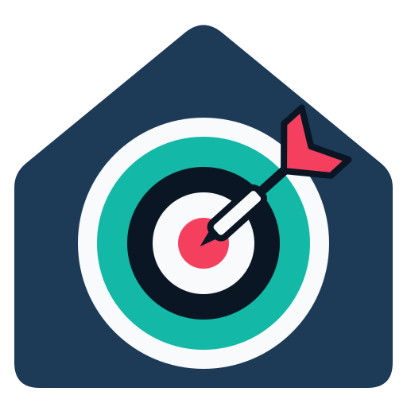

Try the cards
Games at a simulated board, played by the integration and shown by its cards, right here in your browser. Nothing to install.

Autodarts for Home AssistantGames at a simulated board, played by the integration and shown by its cards, right here in your browser. Nothing to install.